We're close! At the moment we've got a Model and View that are very close to being complete. The only problem right now is that we've only modeled one piece, the L. In reality there are 7 different pieces, each with a different color, orientation, and starting position.
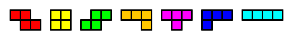
Our goal is to add seven more classes named Z, O, S, J, T, L, and I. Each piece has much in common with the other, but copying and pasting the entire TetrisPiece code seven times will not only be too much work, it will also break the program that we've been working on so far. Every part of the program is set up to deal with TetrisPieces; if we want to make these new classes work with our situation, they should all be subclasses of TetrisPiece.
The TetrisPiece is a class that has lots of information to set up. At the moment its constructor takes in only a Tetris grid, and then sets the Color, anchor Location, and size to be values specific to the L-Piece. The setInitialLocations method is also sets the initial locations to be in the L orientation.
The copy method of the TetrisPiece class still needs to be able to construct using only a grid, so we are not going to remove it. Instead, let's change it to have a default shape that's different so it will signify that it's not one of the main seven. Set the color to PINK and modify the setInitialLocations method so that it's a shape different than a normal TetrisPiece.
Theoretically this piece should never actually appear. The purpose of having this be the default shape is that you will able to instantly recongnize that you've created a generic TetrisPiece, not one of the specific ones that we're about to create. Run the program to make sure that this is the piece that show up.
Since each individual peice will have to set up many instance fields, it will be easiest if the TetrisPiece has a constructor that takes in a large amount of information as parameters.
Create a second constructor that has four parameters: A grid, a Color, an Achor Location, and an int to represent the size. Inside the constructor, make sure that all the parameters make it into the proper instance fields. Remember, the constructor is in charge of the initial set up of the instance fields. If your code just has four lines in the constructor you're not finished.
Now that we've got a constructor to make our lives easier. Create a class named L that extends TetrisPiece.
| L-Piece | Starting Position |
| 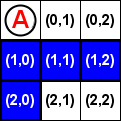 |
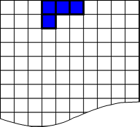 |
The constructor for L should only take in a TetrisGrid. Use super to call the constructor that we just created, passing in values that are specific to the L piece's specific color, starting anchor, and size.
The only thing left to do is to override the setInitialLocations method so that it forms the L shape that we've done before.
Testing:
First, change the TetrisModel's newPiece method to return a new L object instead of the default TetrisPiece that it's currently returning. Run the program again, hopefully the Blue L piece appears in the appropriate starting location on the window.
Now it's time to finish the rest of the pieces. Following a similar strategy as before, create classes J, O, T, S, Z, and I. Test out each one to be sure that they start at the correct position in the window before moving on.
| Z-Piece | Starting Position |
|
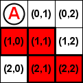 |
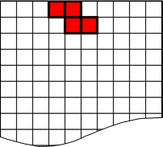 |
| T-Piece | Starting Position |
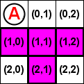 |
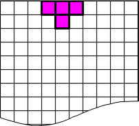 |
| S-Piece | Starting Position |
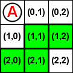 |
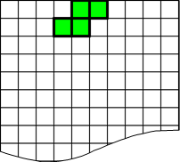 |
| O-Piece | Starting Position |
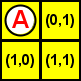 |
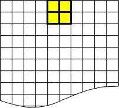 |
| J-Piece | Starting Position |
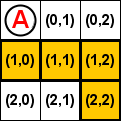 |
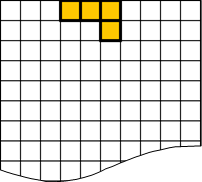 |
| I-Piece | Starting Position |
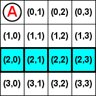 |
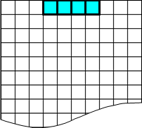 |
Randomizing the Piece:
At the moment, TetrisModel's newPiece method returns a single type of TetrisPiece. Change it so that it will randomly construct and return one of the seven pieces that you've created. Rememer that Polymorphism means you can return any object that is an extension of TetrisPiece.
Run it one more time, test out moving the pieces to the bottom and hitting the L key to get a new random piece. Make sure that you're getting all seven pieces, and that they all start at the right location at the top of the screen.
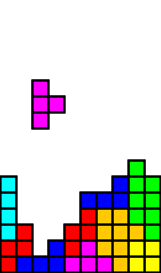